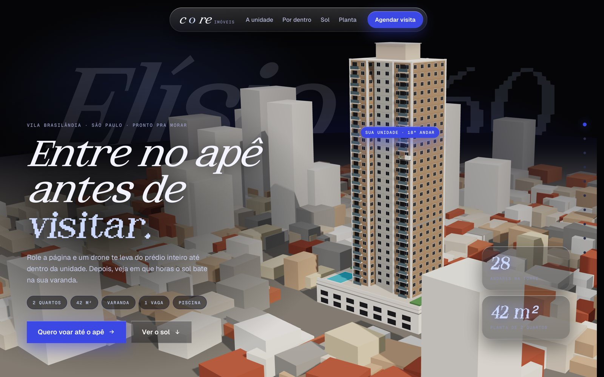
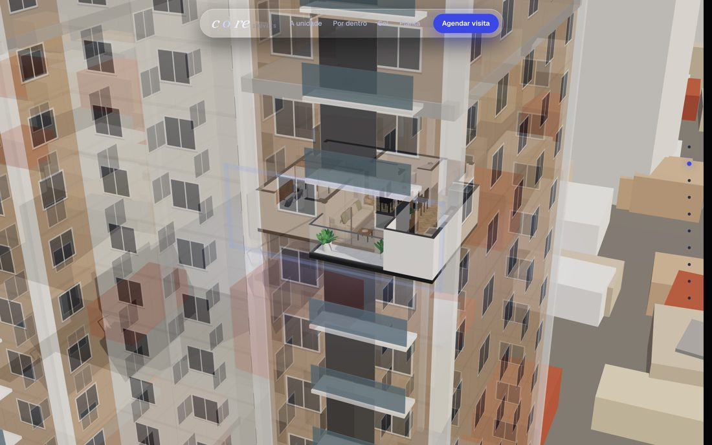
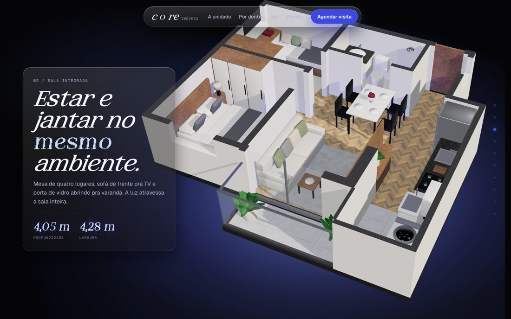
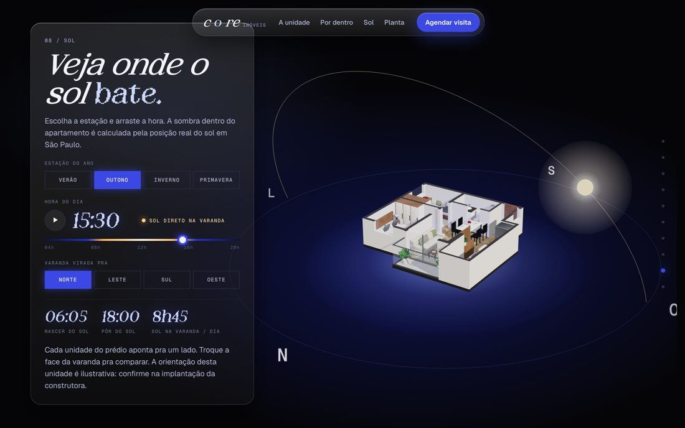
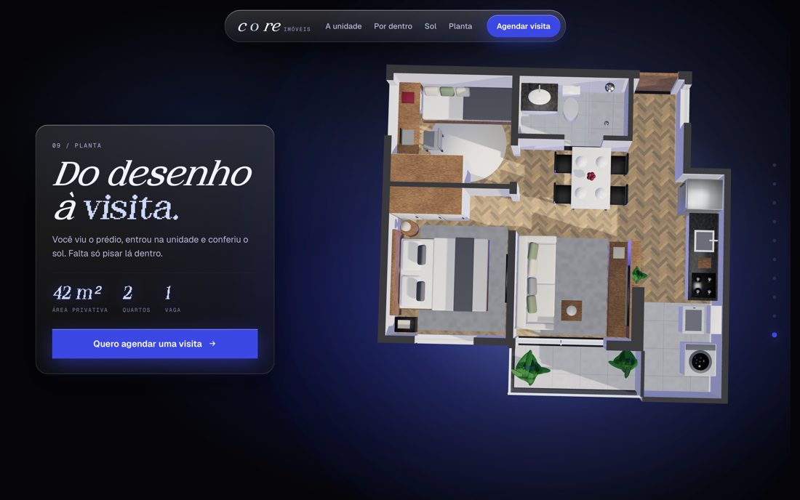
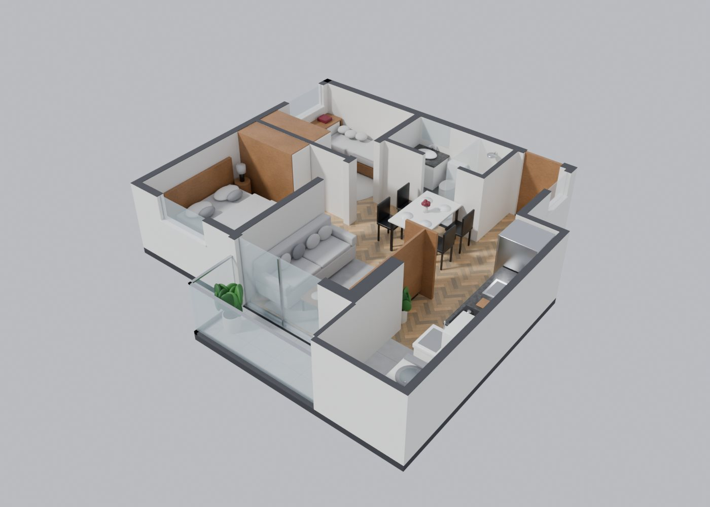
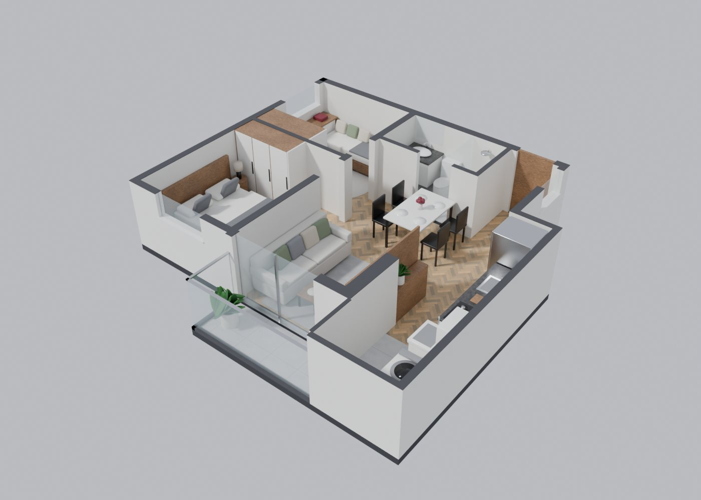
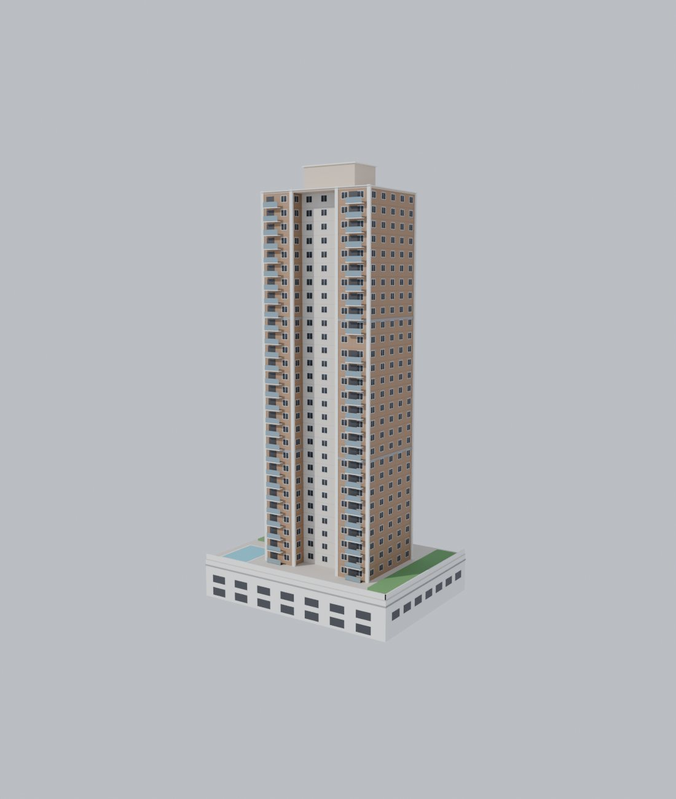

O método em 9 passos, o prompt pronto e as lições da live em que um apartamento saiu de uma planta em 2D e virou um site com voo de drone e simulador de sol. Sem baixar modelo 3D e sem gerador de 3D.

Como usar este PDF: abra o Claude Code numa pasta vazia, anexe este arquivo e escreva: "Leia este guia e comece pelo passo 1. Meu negócio é ___ e o objeto 3D é ___." O Claude conduz o resto.
A pessoa rola a página e a câmera viaja em volta de um objeto 3D, parando em cada parte que importa. O texto entra ao lado. É isso. O resto é variação.




Ver funcionando: https://apto-3d-demo.maxcarrau.workers.dev
Código completo: https://github.com/maximilianocarrau123-debug/site-3d-claude-blender
brew install --cask blender. No Windows: instalador do site blender.org.pip3 install pillow numpy.Você não abre o Blender nenhuma vez. O Claude roda ele por linha de comando.
Por que Blender e não só código de navegador? No navegador as formas são básicas: caixa, esfera, cilindro. No Blender o Claude tem chanfro, curva, suavização e material de verdade. E o resultado sai num arquivo só, que qualquer site carrega.
Cada passo tem uma entrega sua e uma devolução do Claude. Ele só avança quando você diz "ok".
| Passo | O que acontece | O que você entrega | O que o Claude devolve |
|---|---|---|---|
| 1 · Objeto | Escolha de um objeto herói e do objetivo da página. | O negócio e o objeto. | Confirmação, ou uma alternativa melhor pra 3D. |
| 2 · Referência | O Claude lê imagens do objeto e sites de que você gosta. | Fotos, planta ou desenho. De 1 a 3 sites. | Uma tabela do que aproveita de cada um. |
| 3 · Marca | Cores e fontes viram variáveis de CSS. | Seu manual de marca, ou só as cores. | O arquivo de tokens e as regras da página. |
| 4 · Modelagem | O Claude escreve o script, o Blender roda, o Claude olha o render e corrige. | Só o "ok" ou o que ajustar. | Renders lado a lado com a referência. |
| 5 · Exportar | O modelo vira um arquivo .glb leve. | Nada. | O arquivo e o peso dele. |
| 6 · Palco | Luz, sombra, material e câmera no navegador. | Nada. | O link local pra você abrir. |
| 7 · Coreografia | Uma pose de câmera por seção. O scroll mistura as poses. | Quais partes do objeto merecem uma parada. | A câmera viajando conforme você rola. |
| 8 · Página | Título, textos, números e botões por cima do 3D. | Os dados reais do produto. | A página completa. |
| 9 · Polimento | Celular, performance e publicação. | O "pode publicar". | O link no ar. |



Cole numa pasta vazia do Claude Code. Troque só o que está entre chaves. Se não souber alguma resposta, apague a linha: o Claude pergunta no passo certo.
Vamos construir juntos um site 3D em 9 passos. Você conduz: em cada passo você me explica
em poucas linhas o que vai fazer e por quê, faz as perguntas daquele passo, executa, me
mostra o resultado e só avança quando eu disser "ok".
O QUE EU QUERO
- Negócio: {que empresa é e o que ela vende. Ex.: imobiliária, loja de tênis, clínica, restaurante}
- Objeto 3D: {o que vai aparecer em 3D. Ex.: planta de apartamento, tênis, cadeira, máquina, prédio}
- Objetivo da página: {o que o visitante deve fazer no final. Ex.: agendar visita, comprar, pedir orçamento}
- Marca: {caminho do arquivo com cores e fontes, ou "crie uma paleta simples comigo"}
- Referências: {caminhos de imagens do objeto e de sites que eu gosto, ou "vou mandar no passo 2"}
REGRAS DO TRABALHO
1. O objeto 3D é modelado por você, em código, no Blender rodando sem interface
(blender -b -P script.py). Nada de baixar modelo pronto nem usar gerador de 3D.
2. Trabalhe em volta fechada: escreva o script, rode, renderize uma imagem, OLHE a imagem,
liste o que está errado e corrija. No mínimo 3 voltas antes de me mostrar como pronto.
3. Use medida real. Se a referência tiver cotas ou escala (planta, desenho técnico, foto com
objeto de tamanho conhecido), descubra quantos pixels valem 1 metro e modele em metros.
4. Um objeto herói só. Tudo na página gira em torno dele.
5. O site é um index.html + um scene.js, com Three.js por CDN (importmap). Sem build, sem
framework, sem instalar dependência. Sirva com "python3 -m http.server" pra eu ver.
6. Texturas também são geradas por código (Python + PIL). Nada de imagem baixada.
7. Diga com clareza o que é medido e o que é chute seu. Se inventar um dado (andar, preço,
orientação), avise e marque na página como ilustrativo.
8. Não invente depoimento, preço nem número de venda.
OS 9 PASSOS 1. OBJETO — confirme comigo o objeto herói e pra que serve a página. Diga se o objeto é bom pra 3D (precisa ser reconhecível de qualquer ângulo) e sugira alternativa se não for. 2. REFERÊNCIA — peça as imagens do objeto (quanto mais ângulos, melhor) e de 1 a 3 sites de referência. Leia tudo e me diga, numa tabela, o que você aproveita de cada referência. Descreva o objeto de volta pra mim pra eu conferir se você entendeu. 3. MARCA — transforme a marca em variáveis de CSS (cor de fundo, cor de texto, 1 cor de ação, fontes, raio, sombra). Pergunte se o objeto fica realista ou na paleta da marca. 4. MODELAGEM — escreva o script do Blender. Uma função "caixa" que recebe coordenadas da referência e alturas em metros resolve 90% do trabalho. Materiais com nome. Renderize 3 vistas (de cima, 3/4, detalhe) e compare com a referência lado a lado. 5. EXPORTAR — exporte em .glb com texturas embutidas em JPEG. Meta: abaixo de 5 MB. Procedural do Blender não exporta: textura tem que ser imagem ligada na cor base. 6. PALCO — monte a cena no Three.js: luz principal quente com sombra, luz de preenchimento, uma luz na cor da marca, tone mapping ACES, vidro como material físico transparente. Tire um print, confira exposição e sombra, corrija. 7. COREOGRAFIA — defina uma POSE de câmera por seção da página (alvo, azimute, elevação, distância, deslocamento lateral). O scroll só informa "estou X% entre a seção A e a B" e o código mistura as duas poses. A câmera segura a pose no meio da seção e viaja na passagem. A câmera tem inércia. O objeto fica do lado oposto do texto. 8. PÁGINA — escreva as seções por cima do 3D: topo com título e botão, uma seção por parte do objeto (com 2 números reais cada), e um fechamento com a chamada pra ação. 9. POLIMENTO — teste em tela de celular (390x844): o objeto sobe, o texto fica embaixo. Reduza resolução e sombra no celular. Adicione tela de carregamento. Só publique quando eu pedir. MÓDULOS OPCIONAIS (me pergunte no passo 1 se algum faz sentido) - CONTEXTO: modelar também o "em volta" do objeto (o prédio de um apartamento, a loja de um produto) e fazer a câmera voar de fora pra dentro, com o exterior ficando transparente. - SOL: simulador de luz natural com a posição real do sol (latitude da cidade, estação do ano e hora), pra ver sombra e incidência. - VARIAÇÕES: botões que trocam cor, material ou acabamento do objeto. COMO ME RESPONDER - Curto. O que você decidiu, o que ficou pronto, o que trava. - Sempre que gerar imagem, me mostre a imagem. - No fim de cada passo: "Pronto pra começar o passo N. Me dá o ok." Comece agora pelo passo 1.
A pergunta que decide tudo: qual é a coisa que o seu cliente precisa enxergar pra comprar? Essa coisa é o objeto herói.
| Negócio | Objeto herói | O scroll mostra | Módulo extra |
|---|---|---|---|
| Imobiliária, construtora | Planta do apartamento | Cômodo por cômodo | Prédio + voo de drone · sol |
| Loja de produto | O produto (tênis, relógio, garrafa) | Cada diferencial: sola, tecido, fecho | Troca de cor |
| Móveis, marcenaria | O móvel | Encaixes, gavetas, acabamento | Troca de madeira |
| Indústria, máquinas | A máquina | Cada etapa do processo | Vista explodida |
| Arquitetura, engenharia | A casa ou o galpão | Fachada, estrutura, cobertura | Sol nas quatro estações |
| Eventos | O estande ou o palco | Entrada, área de atendimento, telão | Voo de fora pra dentro |
| Clínica, odontologia | O equipamento ou a sala | Cada etapa do atendimento | — |
| Embalagem, alimentos | A embalagem | Rótulo, tampa, o que tem dentro | Troca de sabor |
.glb. Por isso as texturas foram geradas em Python e salvas como JPEG.| Sintoma | O que pedir ao Claude |
|---|---|
| Objeto todo branco ou estourado | "Baixe a exposição e aumente o contraste entre sol e luz ambiente." |
| Objeto passa atrás do texto | "Afaste a câmera nessa pose e desloque o objeto pro lado oposto do cartão." |
| Cores sumiram depois de exportar | "Confira se alguma textura está substituindo a cor base do material." |
| Site pesado no celular | "Reduza a resolução, o mapa de sombra e a quantidade de objetos no celular." |
| O modelo não parece a referência | "Coloque o render e a referência lado a lado e liste as cinco maiores diferenças." |
O repositório é seu ponto de partida. Se preferir não começar do zero, clone o código da live e peça ao Claude: "Adapte este site pro meu negócio ___, trocando o objeto por ___."
Quer ver os próximos? Me segue no Instagram: @maxcarrau.ia